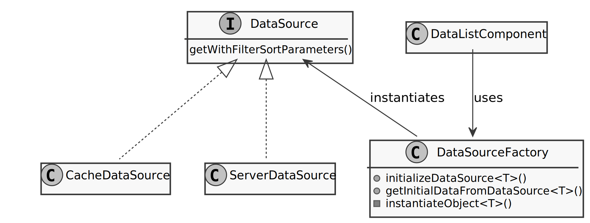
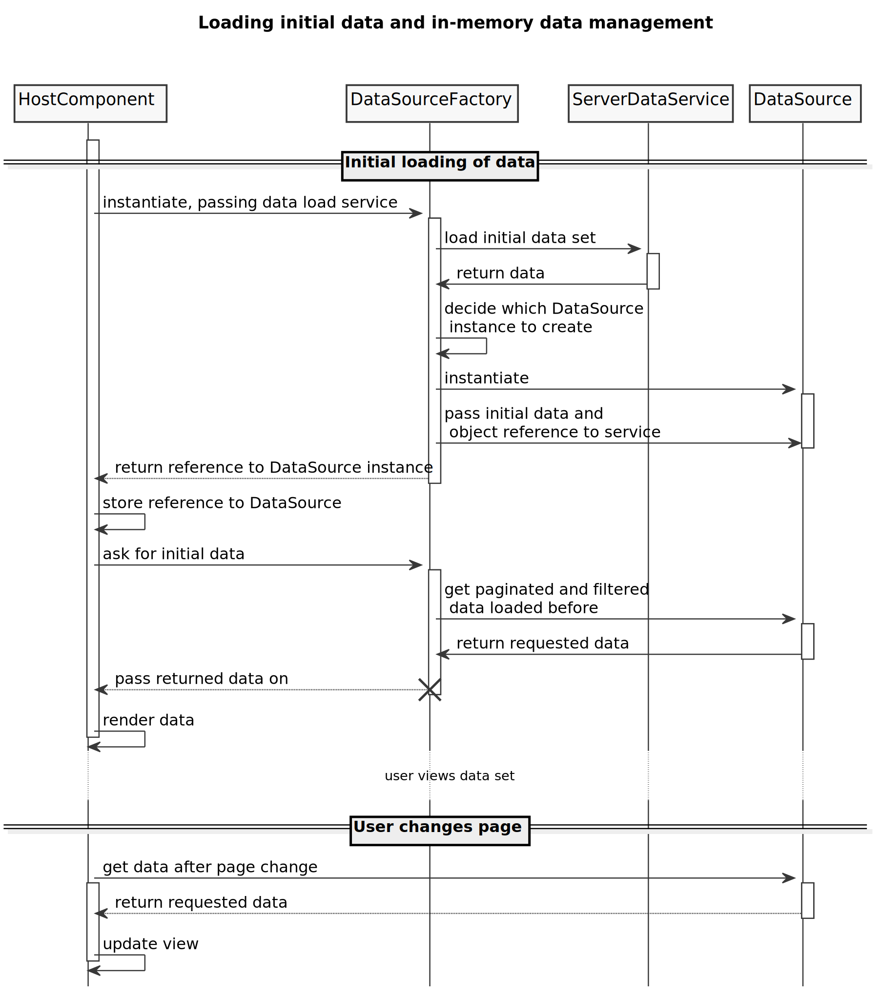
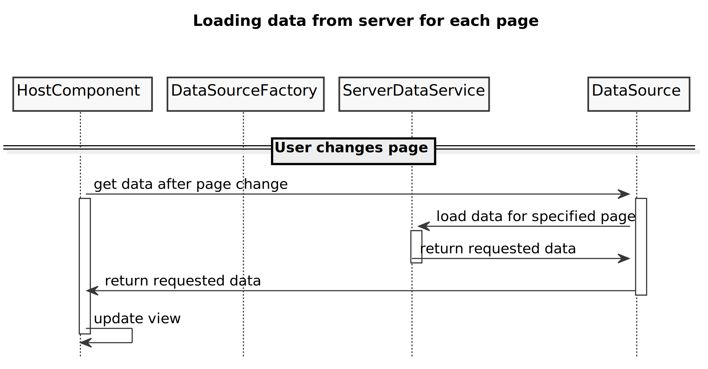

Angular: Dynamic class instantiation to use different data loading strategies
In a recent Angular project, I received the requirement to load all the data for a table view at once and page through the resulting array, or if the data set was too large, to revert to loading the data for each page separately from the server. To accomplish this, I came up with the following architecture:

The essence of this implementation is the following:
- A component (here
DataListComponent) instantiates a factory class,DataSourceFactory. - The factory class then loads the initial data, whereby the size of the initial data set is defined in the factory or can alternatively be passed from the outside. The loading happens via a service, passed into the factory by the component.
- Depending on how many data rows are returned from the server, the
DataSourceFactorydecides on one of two approaches for the further management of the table data:- Load each page from the server as the user navigates the table, or
- assume all data has been loaded, based on the requested size of the data set and the number of returned rows. Manage the browsing and slicing of data in the browser, without reloading from the server.
- Depending on the outcome of the previous decision, it instantiates one of two
DataSourceclasses for loading data by page from the server or using in-memory pagination of the received data set.
We can see an implementation of this factory methodology in the following code sample (as Angular code):
@Injectable()
export class DataSourceFactory {
private bufferMaxSize = 1000;
public initializeDataSource<T>(dataService: Service<T, FilterValues>,
filterFct: DataFilters): Observable<DataSource<T>> {
return dataService.get(1, this.bufferMaxSize)
.pipe(
map(this.instantiateObject(dataService, filterFct))
);
}
private instantiateObject<T>(dataService: Service<T, FilterValue>,
filters: DataFilters): (dataPage: Page<T>) => DataSource<T> {
return (dataPage: Page<T>): DataSource<T> => {
if (dataPage.totalCount <= this.bufferMaxSize) {
return new CacheDataSource<T>(dataPage, filters);
} else return new ServerDataSource<T>(dataPage, dataService);
}
}
public getInitialDataFromDataSource<T>(pageSettings: DataDisplaySettings) {
return (dataSource: DataSource<T>): Observable<DataSourceWithInitialData<T>> => {
return dataSource.getWithFilterSortParameters(pageSettings)
.pipe(
map((initialData: Page<T>): DataSourceWithInitialData<T> => {
return { dataSource, initialData };
})
);
}
}
}The essence of this architecture is that the DataSourceFactory class injected into the
DataListComponent (or any component which requires the paginated display of data)
performs an initial load of the data of type <T> in line 9 of the initializeDataSource()
method. That method then passes the data to the instantiateObject() method in line 11.
The method instantiateObject() is a curried function that receives
its filter settings and the service to load more data as parameters in the
Rx map() method on line 11. It then returns a function
that accepts the first loaded data from the service.
Based on the data received from the data source (likely a server), the
instantiateObject() method now decides which data load paradigm
the system should follow, based on the configured buffer size:
- If the amount of data loaded is less than the configured buffer size, it populates and
returns the in-memory
CacheDataSource(lines 19, 20), - otherwise it returns an instance of
ServerDataSourcein line 21, which loads the requested data from the server page by page, but gets primed with the originally loaded data set for the first page render.
To see how this factory is used, let’s look at a sample implementation in one of the components
making use of this mechanism in their ngOnInit() method:
public ngOnInit(): void {
this.dataSourceFactory.initializeDataSource<DataType>(dataService, filters)
.pipe(
switchMap(this.dataSourceFactory.getInitialDataFromDataSource(this.displaySettings))
)
.subscribe(
(sourceWithInitialData: DataSourceWithInitialData<DataType>) => {
this.dataSource = sourceWithInitialData.dataSource;
this.dataPage = sourceWithInitialData.initialData;
}
);
}In line 2, the implementation calls initializeDataSource() (analyzed above) with
a reference to the dataService loading the data for this page and the filter settings.
The content returned by the observable is then mapped to the factory’s
getInitialDataFromDataSource() method, which gets configured with the display settings
as a first parameter. As you can see, this method is also curried and receives its second
parameter from the Rx chain.
The second parameter passes the instance of the DataSource returned by
initializeDataSource(), which is an instance of either CacheDataSource or
ServerDataSource, as shown in the UML diagram in the beginning.
If we peek at the previous listing, line 27, we see that now, finally, we call the
method defined in the interface, getWithFilterSortParameters(), to retrieve the data for
the page. In lines 29/30 of the previous listing, the implementation then maps (i.e. transforms)
the received data into an object of type DataSourceWithInitialData<T>, which is a simple
container object that contains
- a reference to the data source being used (as
dataSourceproperty) and - a reference to the data set received from the server, as
initialData.
At the end of the ngOnInit() function, we store the received references in component
properties, so we can use the initially loaded data and reuse the received service later
to obtain more data from the service.
The following sequence diagram summarizes the relationships and the timing of actions taken in the case of a data set that triggers in-memory data management, i.e. avoids server loads other than the initial one:

As mentioned, that is the behavior for using the in-memory data source. When using the implementation which loads the data from the server for each page, the first part up to “render data” is identical, but afterwards, we of course have to pull each additional data set for each page from the server, so the second sequence looks like this:

Summary
In this post, I explored a data management approach in Angular which uses two different paradigms for managing the data to display on the page: An in-memory cache and an approach loading the required data from the server on each page change. The solution relies on a common interface and a factory class, which loads the original data set and then decides on the strategy to provide data for displaying data on all subsequent page changes. The entire functionality and logic is transparent to the component using this pagination implementation.